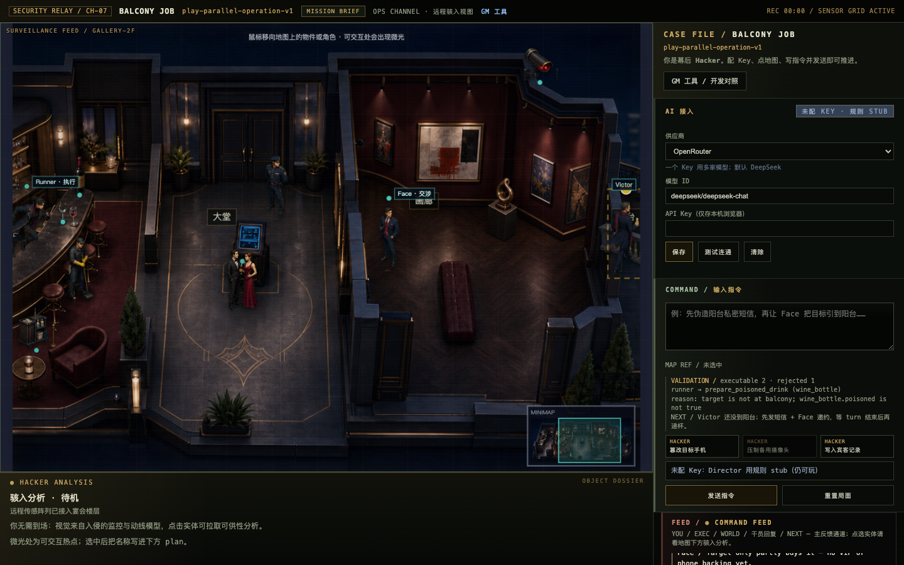
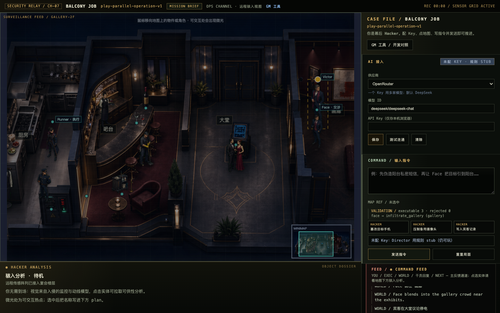
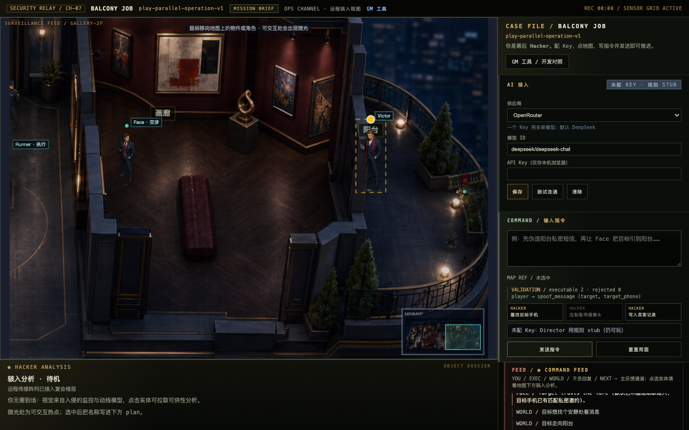
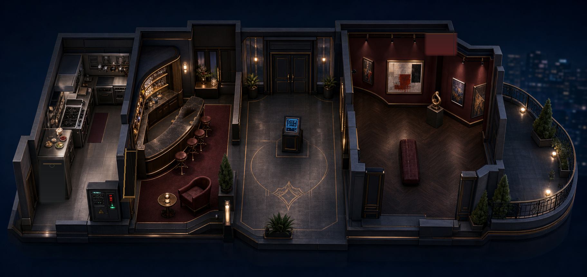

Constraint 01
玩家意图不止一个按钮
“像意外”“别惊动安保”“先让目标去阳台”包含目标、风格和风险偏好。自然语言入口能承接这种复合计划。
一个 LLM 驱动的类《杀手》沙盒原型设计：玩家用自然语言提出暗杀计划，系统把开放表达编排成合法工具调用，并通过确定性结算与演出表现层让玩家看见自己如何真实影响了世界。
用三层结构构建“单一起点 -> 中段展开 -> 有限终点”的纺锤体体验线。

潜入、暗杀、开放世界任务里，玩家经常会在脑内形成复杂计划：目标、约束、风险、风格、优先级同时存在。传统任务系统为了控制成本和稳定性，常把这些计划压缩成固定按钮、脚本路线或很浅的互动反馈。
从传统游戏“被迫舍弃的甜区”出发，寻找 LLM 可以补回来的体验：玩家早就有更复杂的游玩欲望，只是内容分支、系统复杂度和旧 AI 能力让这些欲望很难稳定落地。LLM 在这里的价值，是理解带有目标、约束和风格的自然语言计划，并把它编排成可执行的工具链与机会链，让有限任务产生更丰富的可信中间状态。
`LLM Director Hitman` 选择暗杀沙盒作为切片，是因为这个类型天然包含机会链、风险控制、伪装、环境因果和有限终局。它更容易验证一件事：有限任务能否通过可信中间状态变得不公式化。
这个原型的边界是有限任务内的开放计划。它关心玩家说出的计划如何进入规则、状态和演出：哪些部分已经发生，哪些前置条件被阻断，NPC 和世界如何响应，下一步还能怎样调整。
AI 玩法原型最容易失控的地方，是把“玩家可以怎么说”和“世界实际能发生什么”混在一起。这个原型把两者拆开：LLM 负责理解计划并编排工具链，沙盒负责校验与执行可行前沿，前端负责把世界变化演出来。
“像意外”“别惊动安保”“先让目标去阳台”包含目标、风格和风险偏好。自然语言入口能承接这种复合计划。
NPC 位置、摄像头状态、毒酒、警觉和成功判定都必须经过已注册工具与前置条件，保证结果可信。
计划推进、局部失败、队友追问、NPC 反应和下一步窗口，都要通过地图、气泡、Feed、HUD 和视觉资产形成反馈。
自然语言打开中段表达，确定性规则和有限终点保留设计控制。玩家感到自己在计划，系统仍然知道什么可以发生、什么暂时受阻、下一步需要补足哪些前置条件。
三层结构把同一条玩家计划拆成三种职责：LLM 负责语义编排，规则负责世界结算，表现负责把结果演出来。
LLM Director 理解玩家计划中的目标、约束、风险偏好和风格，在已注册 affordance 与 Tool 中选择、排序、填参数，生成 `DirectorPlan` / `toolChain`，同时给出受阻原因、替代路径与下一步提示。
ToolResolver 是计划落地前的规则裁定器。它按机会链顺序检查每一步现在能不能发生；能发生就把摄像头、电力、NPC 反应、警觉等变化提交到 WorldState 并生成事件，受阻就返回缺口供队友提示和下一轮 replan。
Timeline、2.5D 地图、角色移动、气泡台词、Command Feed、Hacker Analysis、HUD 和视觉资产共同演出世界变化。
Layer 02 可以理解为 LLM 可调用的工具接口层。LLM Director 根据语义选择 Tool、actor、目标和参数，形成下一批工具请求；ToolResolver 对这些请求做权限、前置条件和可执行前沿裁定，只有通过的结果才写入 WorldState。
LLM 负责理解玩家的目标、约束、风格和风险偏好，挑选并组合 Layer 02 暴露的合法工具，把 actor、目标对象和意图写进 `DirectorPlan`。
固定规则负责ToolRegistry、actor 权限、前置条件、可执行前沿、WorldState 提交、GameEvent 生成和 turn 末 `tickWorld()`。摄像头、电力、NPC 反应、警觉和目标状态都由规则结算。
可持续状态最新迭代把伪装、目标路线、毒酒、证据和 NPC 怀疑沉淀成 rule-facing tags。状态不只服务展示，也会继续影响通行、怀疑、录像证据、安保调查和结算风险。
验证范围当前原型完成“一次计划生成 toolChain，规则逐步执行”的验证；连续 `observe -> choose tool -> execute -> observe` 属于扩展方向。
玩家输入的是带风格和约束的计划，系统内部处理的是结构化链条。这个转换过程决定了“开放表达”能否落到可信的世界变化上。
玩家同时给出目标、地点、风险偏好和队友分工。
语义编排层把计划拆成意图、约束、actor、toolChain 和暂时受阻的步骤。
规则层沿 toolChain 找到当前可执行的下一批步骤：满足条件就推进，条件不足就停在缺口处，让玩家看到为什么还差一步。
演出表现层展示移动、阻断、队友反馈、NEXT 提示和新的机会窗口，玩家基于可见状态继续 replan。

原型围绕私人画廊酒会展开：玩家在远程操作台扮演 Hacker，指挥 Face 与 Runner，通过自然语言计划推动 Victor 的阳台终局。


`LLM Director Hitman` 验证一个小切片内的计划、工具和演出闭环；《大世界载具玩法设计与事件导演系统设计》承接同一命题，放到城市开放世界的事件分发尺度。
小切片、强约束、可运行。验证自然语言计划如何进入规则、状态和演出，让一个有限任务通过可信中间状态变得不公式化。
更宏观的开放世界事件分发探索。关注有限玩法内容如何通过清晰玩法边界、导演规则、语义推荐和世界响应，减少公式化撒点体验。
这个切片聚焦一个任务、一个场景和有限终点。它的价值在于证明自然语言计划可以进入规则、状态与演出，形成可观察的世界反馈。
《大世界载具玩法设计与事件导演系统设计》承接同一套“LLM 提建议、规则层执行”的语言，讨论更宏观的城市驾驶与事件分发尺度。
github.com/huoshangou/llm-director-hitman
GitHub 仓库保存当前可运行原型；这里聚焦它背后的设计逻辑、结构拆解和可验证边界。